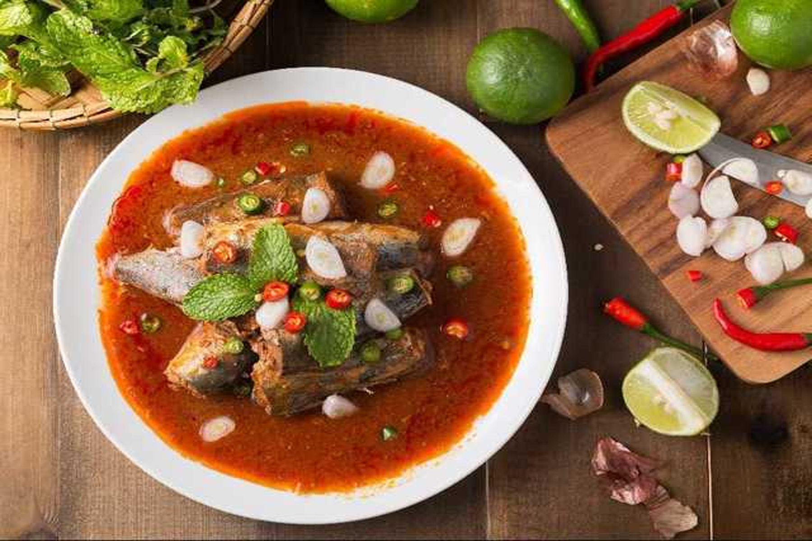

ยำปลากระป๋อง
- ปลากระป๋อง
- น้ำปลา
- น้ำตาล
- น้ำมะนาว
- พริกขี้หนูซอย
- หอมแดงซอย
- ใบสะระแหน่นิดหน่อย
ส่วนผสม
- ผสมน้ำยำ โดยผสมน้ำปลา น้ำตาล น้ำมะนาว กับน้ำมะเขือเทศของปลากระป๋องจนได้รสที่ต้องการ
- ใส่พริกขี้หนูซอย หอมแดงซอยลงไปผสม
- ตักน้ำยำราดปลากระป๋อง โดยหน้าด้วยใบสะระแหน่ พร้อมกับข้าวร้อนๆแล้ว
วิธีทำ
ขอบคุณข้อมูลสูตรอาหารนี้จาก